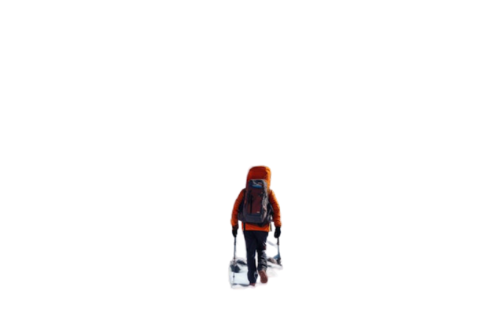
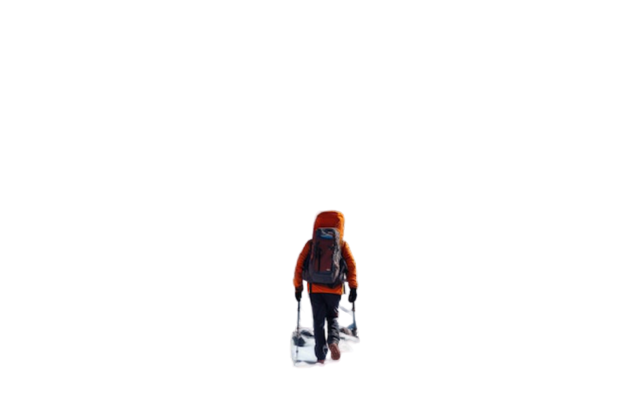

ADVENTURE
Adventure Time
An adventure is an exciting experience or undertaking that is typically bold, sometimes risky.[1] Adventures may be activities with danger such as traveling, exploring, skydiving, mountain climbing, scuba diving, river rafting, or other extreme sports. Adventures are often undertaken to create psychological arousal or in order to achieve a greater goal, such as the pursuit of knowledge that can only be obtained by such activities.
Motivation
An adventure is an exciting experience or undertaking that is typically bold, sometimes risky[1] Adventures may be activities with danger such as traveling, exploring, skydiving, mountain climbing, scuba diving, river rafting, or other extreme sports. Adventures are often undertaken to create psychological arousal or in order to achieve a greater goal, such as the pursuit of knowledge that can only be obtained by such activities.
Motivation
BIKING
Biking, also known as cycling, is a versatile outdoor activity enjoyed by people worldwide. It involves riding bicycles for various purposes, including transportation, recreation, exercise, and even competitive sports. Biking enthusiasts have several options, such as road cycling, which typically involves riding on paved roads and often covers long distances.
For those seeking thrilling tricks and jumps, BMX (Bicycle Motocross) offers an exciting alternative in skateparks or dirt tracks. Apart from the sheer fun, biking is known for its numerous health benefits. It provides an excellent cardiovascular workout, helps strengthen leg muscles, and contributes to overall well-being.
PARAGLIDING
Paragliding is a breathtaking adventure sport that allows individuals to soar through the sky like birds. Participants glide gracefully beneath a lightweight, non-motorized glider called a paraglider, harnessing the power of wind currents. The experience is characterized by its serene and peaceful moments as paragliders enjoy unparalleled aerial views of stunning landscapes.
While paragliding can offer a sense of tranquility, it can also deliver an adrenaline rush, particularly during acrobatic maneuvers performed by experienced pilots. Popular paragliding destinations span the globe, from the majestic Swiss Alps to the towering peaks of the Himalayas and a myriad of scenic locations around the world.
SURFING
Surfing is a captivating water sport that beckons adventurers to ride the rolling ocean waves using a specially designed surfboard. It's an activity deeply rooted in the thrill of catching and riding waves, providing an unparalleled connection with the sea. Surfing comes in various forms, including shortboarding for high-speed maneuvers, longboarding for a smoother, more traditional experience, and big wave surfing for those daring enough to tackle massive ocean swells.
Beyond the excitement, surfing offers a full-body workout, enhancing balance, strength, and cardiovascular fitness while immersing participants in the natural beauty of coastal environments.